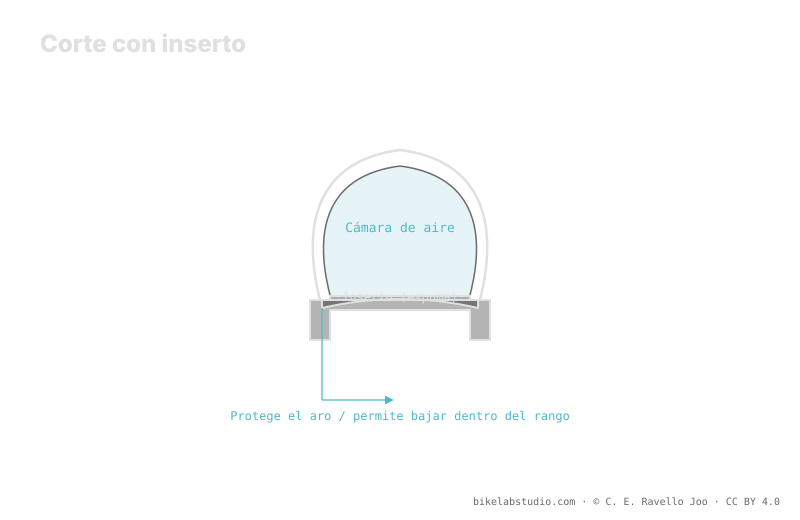

Un inserto es un anillo de espuma o polímero que va dentro del neumático tubeless y hace tres cosas: protege el aro, soporta el flanco y sirve de plan B si pierdes aire. Familias como CushCore, Rimpact, Nukeproof ARD o Vittoria Air-Liner difieren en volumen, densidad y filosofía, así que no todos permiten bajar la misma presión: el factor de reducción es cualitativo, no un descuento fijo. Cuánto puedes bajar lo cierra la calculadora junto al límite de burping.
El inserto no es magia ni un permiso para desinflar sin criterio. Es una pieza que cambia cómo se comporta el neumático a baja presión, y elegir el tipo correcto importa más que la marca.
Con inserto puedes bajar, pero cuánto depende del tipo. La Calculadora de Presión PSI te da tu rango real según peso, ancho y llanta. ▶ Abrir la calculadora PSI
Dentro del neumático tubeless, el inserto cumple tres funciones que se solapan en distinto grado según el modelo: protección de aro —absorbe el golpe cuando el neumático llega al fondo y evita que la llanta impacte directa contra la roca—, soporte del flanco —da estructura para que el neumático no se pliegue en curvas a baja presión— y rodaje de emergencia —si pierdes aire, el inserto sostiene algo el neumático para salir del apuro—. Ningún inserto hace las tres al máximo a la vez.

El inserto se coloca sobre el aro tubeless ya encintado, dentro del neumático, antes de cerrar el segundo flanco y sentar el talón. Los de gran volumen dificultan tanto el montaje como el sentado del talón, así que conviene técnica, lubricante o jabón de montaje y, muchas veces, un compresor para dar el caudal necesario. Importante: el sellante sigue siendo obligatorio; el inserto no lo reemplaza, convive con él.
Protege el aro, soporta el flanco a baja presión y da un plan B para rodar si pierdes aire. Cuánto de cada cosa depende del tipo.
No. Uno de gran volumen permite bajar más que uno ligero. La reducción es cualitativa, no un descuento fijo.
Sobre el aro encintado, dentro del neumático, antes de sentar el talón. Los de gran volumen piden técnica y compresor. El sellante sigue.
Gran volumen (CushCore), perfil medio (Rimpact), ligeros de aro (Nukeproof ARD) y liners para rodar sin aire (Vittoria Air-Liner).
El inserto amplía cuánto puedes bajar; la Calculadora de Presión PSI cierra tu rango real por rueda según ancho, llanta y disciplina. ▶ Abrir la calculadora PSI
© 2026 BikeLab Studio. Contenido bajo CC BY 4.0: puedes copiarlo, traducirlo y publicarlo, incluso con fines comerciales. La cita es obligatoria. Sin atribución, la licencia se revoca de forma automática (CC BY 4.0, §6.a) y el uso pasa a ser una infracción de derechos de autor: solicitamos la retirada del contenido y su desindexación. · Diseño y propiedad: Carlos Ravello Joo